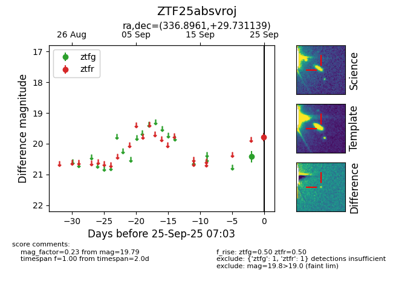

FINK: ZTF25absvroj
Lasair: ZTF25absvroj
ALeRCE: ZTF25absvroj
ZTF25absvroj (ztf,fink)
equatorial (ra, dec) = (336.8961,+29.73114)
galactic (l, b) = (89.1350,-23.53995)

last ztfg=20.42, ztfr=19.79
1 ztfg, 1 ztfr detections